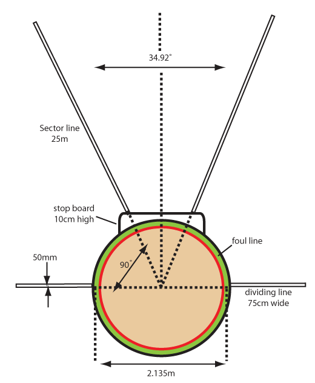

Facilities and equipment for shot put
Shot put requires specific facilities and equipment for performance and athletes’ safety.It includes the shot put area, shot, carbonate powder such as magnesium and specialised gear for the athletes.
Shot put area
The shot put area includes a throwing circle, a stop board, and a landing sector as shown in Figure 2.7.The throwing circle has a diameter of 2.135 m, while the stop-board stands 10 cm high.The landing sector spans approximately 35 degrees from the centre of the throwing circle.
